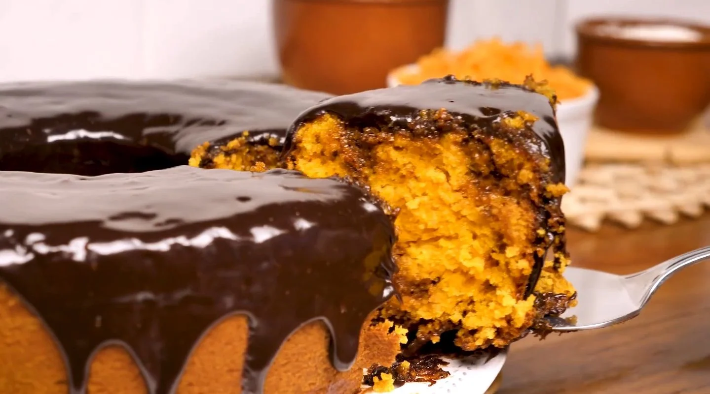
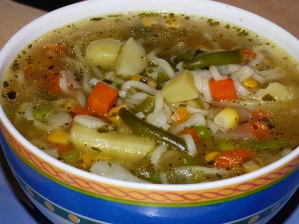

Bolo de Cenoura
Ingredientes:
- 2 cenouras médias
- 3 ovos
- 1 xícara de açúcar
- 1/2 xícara de óleo
- 2 xícaras de farinha de trigo
- 1 colher de sopa de fermento em pó
Modo de Preparo:
- Descasque e pique as cenouras em pedaços pequenos e bata no liquidificador com os ovos e o óleo.
- Em uma tigela, misture o açúcar, a farinha e o fermento. Adicione a mistura do liquidificador e misture bem.
- Despeje a massa em uma forma untada e leve ao forno pré-aquecido a 180°C por cerca de 30 minutos.
Torta de Frango
Ingredientes:
- 2 xícaras de frango cozido e desfiado
- 1 lata de milho verde
- 1 lata de ervilha
- 1/2 xícara de azeitonas picadas
- 1 cebola picada
- 2 dentes de alho picados
- 1/2 xícara de leite
- 2 colheres de sopa de farinha de trigo
- 2 colheres de sopa de manteiga
- sal e pimenta a gosto
Modo de Preparo:
- Refogue a cebola e o alho na manteiga até dourar.
- Adicione a farinha de trigo e mexa bem. Adicione o leite aos poucos e continue mexendo até formar um creme.
- Adicione o frango desfiado, o milho, a ervilha, as azeitonas, o sal e a pimenta e misture bem.
- Despeje o recheio em uma forma de torta e cubra com massa de pastel.
- Leve ao forno pré-aquecido a 180°C por cerca de 30 minutos ou até que a massa esteja dourada.

Sopa de Legumes
Ingredientes:
- 1 cebola picada
- 2 dentes de alho picados
- 2 cenouras picadas
- 2 batatas picadas
- 1 abobrinha picada
- 1 chuchu picado
- 1 litro de água
- sal e pimenta a gosto
Modo de Preparo:
- Refogue a cebola e o alho em uma panela.
- Adicione os legumes e refogue por alguns minutos.
- Adicione a água e tempere com sal e pimenta.
- Deixe cozinhar em fogo baixo por cerca de 30 minutos ou até que os legumes estejam macios.
- Bata a sopa no liquidificador até que fique cremosa.